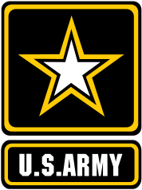

I'm Sean Davis.
I am a Software Engineer, Manager, and US Army Veteran. I build software with C# and Java.
My Story
I am a classic black frame glasses, plaid shirt, computer nerd. I learned HTML 4 when I was 11 to make awful 90s Pokémon websites (complete with flashing gifs and the <marquee> tag) and created a very popular game mod at the age of 13. I then decided to go in a completely different direction and went to Texas A&M (Gig ‘em) to became a US Army officer specializing in civil (specifically traffic) engineering.
My unique journey sets me apart from other Software Engineers. My engineer education gave me a solid foundation in advanced math (calculus doesn't scare me) and engineer problem solving. My 6-year Army career gave me the opportunity to develop as a confident leader. I have led teams as small as 3 and as large as 180. I have been the sole lead on a $18 million-dollar project involving 400 people and made decisions that would affect a people for the rest of their lives. I know what it means to lead, build teams, and develop the leaders to replace me. Frankly, I'm good at it too.
I am now back to my roots pursuing a Masters in Software Engineering at Penn State (2020 here we come). I have 3 years of experience in C# where I started out as a hobby game developer. I also have a passion for object-oriented design and love using patterns to arcitecture to create effective solutions. I have since branched into Java, Cloud Computing, DevOps, and the MEAN stack.
Work History
2011-2017 
Engineer Officer - Captain
US Army Corps of Engineers
Vivamus dapibus lorem venenatis ligula porta mattis. Nam sodales lectus a sem tempor euismod. Nam a consectetur erat. Integer justo lectus, lobortis nec justo et, mollis congue magna. Mauris a erat turpis. Nullam nec lectus consequat orci lacinia blandit et sed neque. Etiam mattis purus sit amet lectus cursus, vel efficitur odio convallis. Duis ligula libero, consequat eu euismod quis, lobortis at nulla. Etiam porta ullamcorper enim, et rhoncus massa sollicitudin eu. Integer ac maximus sem, nec consequat est. Quisque sapien mauris, maximus eget posuere in, tristique in velit.
- Leadership
- Project Managment
- Team Building
- Leader Development
- Public Speaking
- Operations
- Stakeholder Engagement
- Strategic Planning
- Logistics
Education
2018-2020 (Projected)

Masters of Science - Software Engineering
Penn State University, World Campus, GPA 4.0
Vivamus dapibus lorem venenatis ligula porta mattis. Nam sodales lectus a sem tempor euismod. Nam a consectetur erat. Integer justo lectus, lobortis nec justo et, mollis congue magna. Mauris a erat turpis. Nullam nec lectus consequat orci lacinia blandit et sed neque. Etiam mattis purus sit amet lectus cursus, vel efficitur odio convallis. Duis ligula libero, consequat eu euismod quis, lobortis at nulla. Etiam porta ullamcorper enim, et rhoncus massa sollicitudin eu. Integer ac maximus sem, nec consequat est. Quisque sapien mauris, maximus eget posuere in, tristique in velit.
- Java
- Object Oriented Design
- Design Patterns
- Agile Methodologies
- Database Design
- Algorithms and Data Structures
- System Architecture
- Requirements Engineering
- Leadership
- Project Managment
- Team Building
2006-2010

Bachelors of Science - Civil Engineering
Texas A&M University, College Station, Texas, GPA 3.1
Corps of Cadets Company B-1 Information Technology Officer, Recruiting, Rudder's Rangers, Big Event
- Matlab
- Calculus
- Differential Equations
- Statistics
- Traffic Modeling and Simulation
- Highway Design
- Materials
- Structures
- Urban Planning
- Stormwater Managment
- Hydrology
- Geology
- Leadership
- Team Building
- Leader Development
- Public Speaking
Projects
Personal Web Portfolio
Vivamus dapibus lorem venenatis ligula porta mattis. Nam sodales lectus a sem tempor euismod. Nam a consectetur erat. Integer justo lectus, lobortis nec justo et, mollis congue magna. Mauris a erat turpis. Nullam nec lectus consequat orci lacinia blandit et sed neque. Etiam mattis purus sit amet lectus cursus, vel efficitur odio convallis. Duis ligula libero, consequat eu euismod quis, lobortis at nulla. Etiam porta ullamcorper enim, et rhoncus massa sollicitudin eu. Integer ac maximus sem, nec consequat est. Quisque sapien mauris, maximus eget posuere in, tristique in velit.